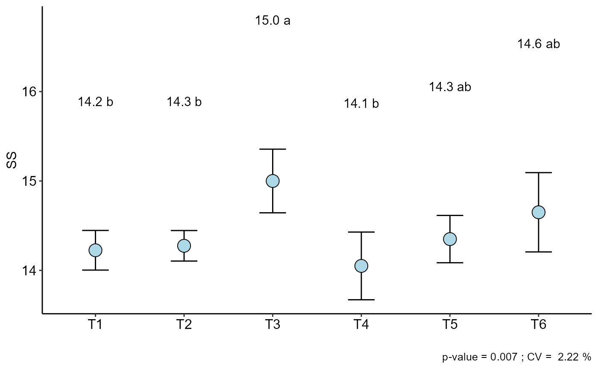

Utils: Summary of Analysis of Variance and Test of Means
summarise_anova.RdSummarizes the output of the analysis of variance and the multiple comparisons test for completely randomized (DIC), randomized block (DBC) and Latin square (DQL) designs.
summarise_anova(analysis, inf = "p", design = "DIC", round = 3, divisor = TRUE)
Arguments
| analysis | List with the analysis outputs of the DIC, DBC, DQL, FAT2DIC, FAT2DBC, PSUBDIC and PSUBDBC functions |
|---|---|
| inf | Analysis of variance information (can be "p", "f", "QM" or "SQ") |
| design | Type of experimental project (DIC, DBC, DQL, FAT2DIC, FAT2DBC, PSUBDIC or PSUBDBC) |
| round | Number of decimal places |
| divisor | Add divider between columns |
Note
Adding table divider can help to build tables in microsoft word. Copy console output, paste into MS Word, Insert, Table, Convert text to table, Separated text into:, Other: |.
The column names in the final output are imported from the ylab argument within each function.
This function is only for declared qualitative factors. In the case of a quantitative factor and the other qualitative in projects with two factors, this function will not work.
Triple factorials and split-split-plot do not work in this function.
Author
Gabriel Danilo Shimizu
Examples
library(AgroR) #===================================== # DIC #===================================== data(pomegranate) attach(pomegranate)#> #> #>#> #> #>#> #> #>#> #> #>#> #> #>#> #> #>#> #> #>#> #> #>#> #> #>#> #> #>#> #> #>#> #> #>#> #> #>#> #> #>#> #> #>#> #> #>#> #> #>#> #> #>#> #> #>#> #> #>#> #> #>#> #> ----------------------------------------------------------------- #> Normality of errors #> ----------------------------------------------------------------- #> Method Statistic p.value #> Shapiro-Wilk normality test(W) 0.9448293 0.2087967 #>#> As the calculated p-value is greater than the 5% significance level, hypothesis H0 is not rejected. Therefore, errors can be considered normal#> #> ----------------------------------------------------------------- #> Homogeneity of Variances #> ----------------------------------------------------------------- #> Method Statistic p.value #> Bartlett test(Bartlett's K-squared) 8.568274 0.1275737 #>#> As the calculated p-value is greater than the 5% significance level,hypothesis H0 is not rejected. Therefore, the variances can be considered homogeneous#> #> ----------------------------------------------------------------- #> Independence from errors #> ----------------------------------------------------------------- #> Method Statistic p.value #> Durbin-Watson test(DW) 2.104821 0.1924474 #>#> As the calculated p-value is greater than the 5% significance level, hypothesis H0 is not rejected. Therefore, errors can be considered independent#> #> ----------------------------------------------------------------- #> Additional Information #> ----------------------------------------------------------------- #> #> CV (%) = 10.84 #> R-squared = 0.92 #> Mean = 2.2596 #> Median = 2.225 #> Possible outliers = No discrepant point #> #> ----------------------------------------------------------------- #> Analysis of Variance #> ----------------------------------------------------------------- #> Df Sum Sq Mean.Sq F value Pr(F) #> trat 5 3.692121 0.73842417 12.31191 2.723541e-05 #> Residuals 18 1.079575 0.05997639 #> #>#> As the calculated p-value, it is less than the 5% significance level.The hypothesis H0 of equality of means is rejected. Therefore, at least two treatments differ#> #> #> ----------------------------------------------------------------- #> Multiple Comparison Test #> ----------------------------------------------------------------- #> resp groups #> T5 2.6375 a #> T4 2.6200 a #> T3 2.6175 a #> T6 2.1625 ab #> T1 1.8425 b #> T2 1.6775 b #>#>#> #> ----------------------------------------------------------------- #> Normality of errors #> ----------------------------------------------------------------- #> Method Statistic p.value #> Shapiro-Wilk normality test(W) 0.9286937 0.09115023 #>#> As the calculated p-value is greater than the 5% significance level, hypothesis H0 is not rejected. Therefore, errors can be considered normal#> #> ----------------------------------------------------------------- #> Homogeneity of Variances #> ----------------------------------------------------------------- #> Method Statistic p.value #> Bartlett test(Bartlett's K-squared) 3.118359 0.6817441 #>#> As the calculated p-value is greater than the 5% significance level,hypothesis H0 is not rejected. Therefore, the variances can be considered homogeneous#> #> ----------------------------------------------------------------- #> Independence from errors #> ----------------------------------------------------------------- #> Method Statistic p.value #> Durbin-Watson test(DW) 2.618225 0.7051835 #>#> As the calculated p-value is greater than the 5% significance level, hypothesis H0 is not rejected. Therefore, errors can be considered independent#> #> ----------------------------------------------------------------- #> Additional Information #> ----------------------------------------------------------------- #> #> CV (%) = 2.22 #> R-squared = 0.82 #> Mean = 14.425 #> Median = 14.3 #> Possible outliers = No discrepant point #> #> ----------------------------------------------------------------- #> Analysis of Variance #> ----------------------------------------------------------------- #> Df Sum Sq Mean.Sq F value Pr(F) #> trat 5 2.360 0.4720 4.604878 0.007008811 #> Residuals 18 1.845 0.1025 #> #>#> As the calculated p-value, it is less than the 5% significance level.The hypothesis H0 of equality of means is rejected. Therefore, at least two treatments differ#> #> #> ----------------------------------------------------------------- #> Multiple Comparison Test #> ----------------------------------------------------------------- #> resp groups #> T3 15.000 a #> T6 14.650 ab #> T5 14.350 ab #> T2 14.275 b #> T1 14.225 b #> T4 14.050 b #>#>#> #> ----------------------------------------------------------------- #> Normality of errors #> ----------------------------------------------------------------- #> Method Statistic p.value #> Shapiro-Wilk normality test(W) 0.9757571 0.8067715 #>#> As the calculated p-value is greater than the 5% significance level, hypothesis H0 is not rejected. Therefore, errors can be considered normal#> #> ----------------------------------------------------------------- #> Homogeneity of Variances #> ----------------------------------------------------------------- #> Method Statistic p.value #> Bartlett test(Bartlett's K-squared) 2.088676 0.8367439 #>#> As the calculated p-value is greater than the 5% significance level,hypothesis H0 is not rejected. Therefore, the variances can be considered homogeneous#> #> ----------------------------------------------------------------- #> Independence from errors #> ----------------------------------------------------------------- #> Method Statistic p.value #> Durbin-Watson test(DW) 2.633598 0.7201694 #>#> As the calculated p-value is greater than the 5% significance level, hypothesis H0 is not rejected. Therefore, errors can be considered independent#> #> ----------------------------------------------------------------- #> Additional Information #> ----------------------------------------------------------------- #> #> CV (%) = 16.41 #> R-squared = 0.46 #> Mean = 0.9875 #> Median = 0.95 #> Possible outliers = No discrepant point #> #> ----------------------------------------------------------------- #> Analysis of Variance #> ----------------------------------------------------------------- #> Df Sum Sq Mean.Sq F value Pr(F) #> trat 5 0.11375 0.02275 0.8666667 0.5222835 #> Residuals 18 0.47250 0.02625 #> #>#>#> #> #> ----------------------------------------------------------------- #> Multiple Comparison Test #> ----------------------------------------------------------------- #> [1] "H0 is not rejected" #>#>#> | WL | SS | AT | #> T1 | 1.842 b | 14.225 b | 0.9 a | #> T2 | 1.678 b | 14.275 b | 0.9 a | #> T3 | 2.618 a | 15 a | 0.975 a | #> T4 | 2.62 a | 14.05 b | 1.05 a | #> T5 | 2.638 a | 14.35 ab | 1.075 a | #> T6 | 2.163 ab | 14.65 ab | 1.025 a | #> CV(%) | 10.838 | 2.219 | 16.407 | #> p-value | p<0.001 | 0.007 | 0.522 | #> Transformation | No transf | No transf | No transf |#===================================== # DBC #===================================== data(soybean) attach(soybean)#> #> #>#> #> ----------------------------------------------------------------- #> Normality of errors #> ----------------------------------------------------------------- #> Method Statistic p.value #> Shapiro-Wilk normality test(W) 0.97649 0.5613183 #>#> As the calculated p-value is greater than the 5% significance level, hypothesis H0 is not rejected. Therefore, errors can be considered normal#> #> ----------------------------------------------------------------- #> Homogeneity of Variances #> ----------------------------------------------------------------- #> Method Statistic p.value #> Bartlett test(Bartlett's K-squared) 9.54102 0.3889021 #>#> As the calculated p-value is greater than the 5% significance level, hypothesis H0 is not rejected. Therefore, the variances can be considered homogeneous#> #> ----------------------------------------------------------------- #> Independence from errors #> ----------------------------------------------------------------- #> Method Statistic p.value #> Durbin-Watson test(DW) 2.484876 0.5578071 #>#> As the calculated p-value is greater than the 5% significance level, hypothesis H0 is not rejected. Therefore, errors can be considered independent#> #> ----------------------------------------------------------------- #> Additional Information #> ----------------------------------------------------------------- #> #> CV (%) = 9.82 #> R-squared = 0.67 #> Mean = 2395.2 #> Median = 2444 #> Possible outliers = No discrepant point #> #> ----------------------------------------------------------------- #> Analysis of Variance #> ----------------------------------------------------------------- #> Df Sum Sq Mean.Sq F value Pr(F) #> trat 9 2178702.9 242078.10 4.374765 0.001344107 #> bloco 3 187633.4 62544.47 1.130285 0.354392706 #> Residuals 27 1494048.1 55335.11 #>#> As the calculated p-value, it is less than the 5% significance level. The hypothesis H0 of equality of means is rejected. Therefore, at least two treatments differ#> #> ----------------------------------------------------------------- #> Multiple Comparison Test #> ----------------------------------------------------------------- #> resp groups #> T3 2890.50 a #> T2 2554.75 ab #> T1 2551.25 ab #> T8 2513.25 ab #> T7 2434.25 ab #> T5 2319.50 ab #> T4 2302.50 b #> T10 2186.25 b #> T9 2128.75 b #> T6 2071.00 b #>#> | Yield | #> T1 | 2551.25 ab | #> T2 | 2554.75 ab | #> T3 | 2890.5 a | #> T4 | 2302.5 b | #> T5 | 2319.5 ab | #> T6 | 2071 b | #> T7 | 2434.25 ab | #> T8 | 2513.25 ab | #> T9 | 2128.75 b | #> T10 | 2186.25 b | #> CV(%) | 9.821 | #> p_tr | 0.001 | #> p_bl | 0.354 | #> Transformation | No transf |#===================================== # FAT2DIC #===================================== data(corn) attach(corn)#> #> #>#> #> #>#> #> #>#> #> ----------------------------------------------------------------- #> Normality of errors #> ----------------------------------------------------------------- #> Method Statistic p.value #> Shapiro-Wilk normality test(W) 0.9704679 0.6785543 #>#> As the calculated p-value is greater than the 5% significance level, hypothesis H0 is not rejected. Therefore, errors can be considered normal#> #> ----------------------------------------------------------------- #> Homogeneity of Variances #> ----------------------------------------------------------------- #> Method Statistic p.value #> Bartlett test(Bartlett's K-squared) 3.948702 0.5568251 #>#> As the calculated p-value is greater than the 5% significance level, hypothesis H0 is not rejected. Therefore, the variances can be considered homogeneous#> #> ----------------------------------------------------------------- #> Independence from errors #> ----------------------------------------------------------------- #> Method Statistic p.value #> Durbin-Watson test(DW) 2.820109 0.8709071 #>#> As the calculated p-value is greater than the 5% significance level, hypothesis H0 is not rejected. Therefore, errors can be considered independent#> #> ----------------------------------------------------------------- #> Additional Information #> ----------------------------------------------------------------- #> #> CV (%) = 0.49 #> Mean = 159.6208 #> Median = 162.55 #> Possible outliers = No discrepant point #> #> ----------------------------------------------------------------- #> Analysis of Variance #> ----------------------------------------------------------------- #> Df Sum Sq Mean.Sq F value Pr(F) #> Fator1 2 137.3058 68.6529167 110.0158 8.086134e-11 #> Fator2 1 654.1704 654.1704167 1048.3034 2.080297e-17 #> Fator1:Fator2 2 436.3508 218.1754167 349.6245 3.948414e-15 #> Residuals 18 11.2325 0.6240278 #>#>#> ----------------------------------------------------------------- #> Significant interaction: analyzing the interaction #> ----------------------------------------------------------------- #> #> ----------------------------------------------------------------- #> Analyzing F1 inside of each level of F2 #> ----------------------------------------------------------------- #> #> Df Sum Sq Mean Sq F value Pr(>F) #> Fator2 1 654.17 654.17 1048.303 < 2.2e-16 *** #> Fator2:Fator1 4 573.66 143.41 229.820 3.492e-15 *** #> Fator2:Fator1: 55 2 521.74 260.87 418.046 8.202e-16 *** #> Fator2:Fator1: 65 2 51.91 25.96 41.594 1.784e-07 *** #> Residuals 18 11.23 0.62 #> --- #> Signif. codes: 0 '***' 0.001 '**' 0.01 '*' 0.05 '.' 0.1 ' ' 1 #> #> ----------------------------------------------------------------- #> Analyzing F2 inside of the level of F1 #> ----------------------------------------------------------------- #> #> Df Sum Sq Mean Sq F value Pr(>F) #> Fator1 2 137.31 68.65 110.02 8.086e-11 *** #> Fator1:Fator2 3 1090.52 363.51 582.52 < 2.2e-16 *** #> Fator1:Fator2: A1 1 469.71 469.71 752.71 3.876e-16 *** #> Fator1:Fator2: A2 1 4.81 4.81 7.70 0.01249 * #> Fator1:Fator2: A3 1 616.00 616.00 987.14 < 2.2e-16 *** #> Residuals 18 11.23 0.62 #> --- #> Signif. codes: 0 '***' 0.001 '**' 0.01 '*' 0.05 '.' 0.1 ' ' 1#> #> ----------------------------------------------------------------- #> Final table #> ----------------------------------------------------------------- #> 55 65 #> A1 150 bB 165 bA #> A2 164 aA 162 cB #> A3 150 bB 167 aA#> #> #> #>#> | Response | #> A1 | - | #> A2 | - | #> A3 | - | #> 55 | - | #> 65 | - | #> A1 55 | 150bB | #> A1 65 | 165bA | #> A2 55 | 164aA | #> A2 65 | 162cB | #> A3 55 | 150bB | #> A3 65 | 167aA | #> CV(%) | 0.495 | #> p_F1 | p<0.001 | #> p_F2 | p<0.001 | #> p_F1xF2 | p<0.001 | #> Transformation | No transf |